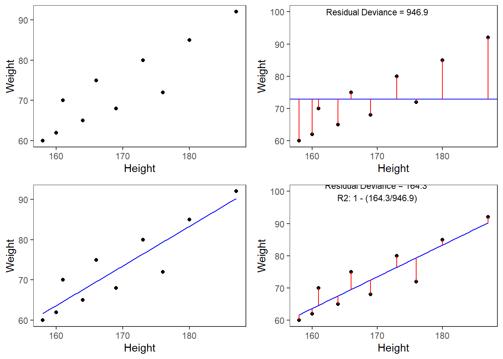
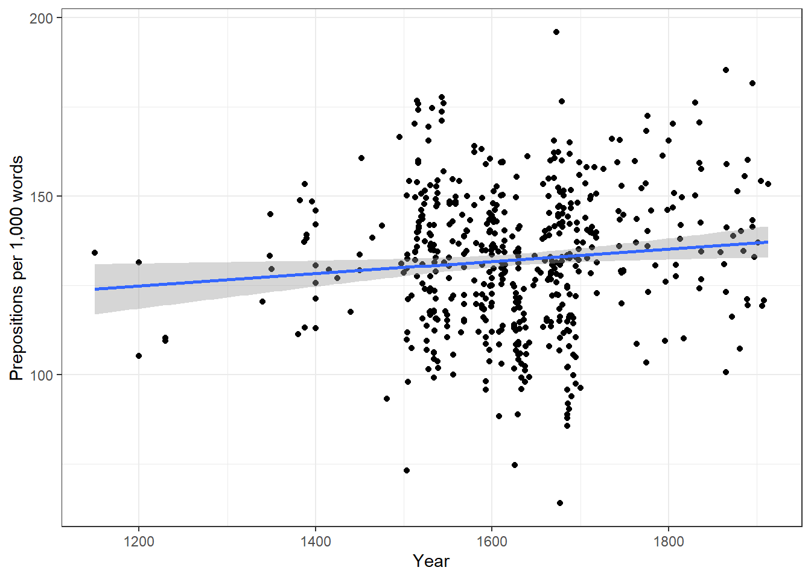
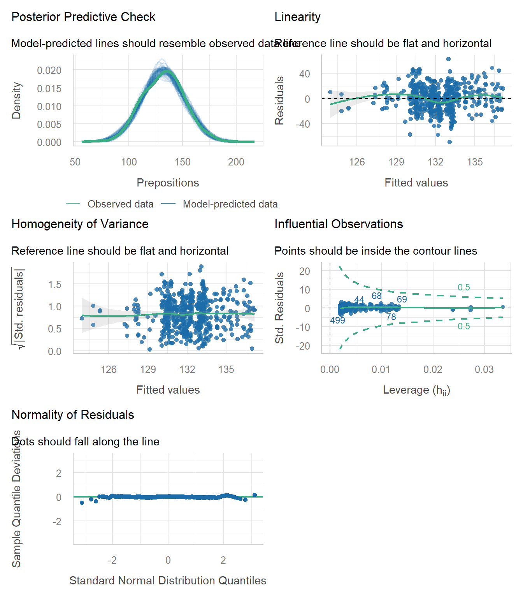
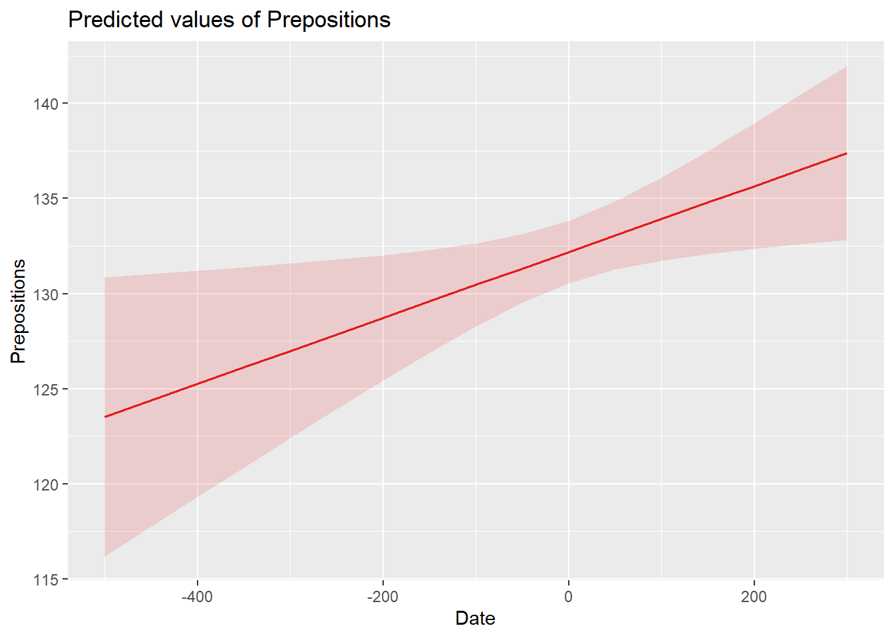
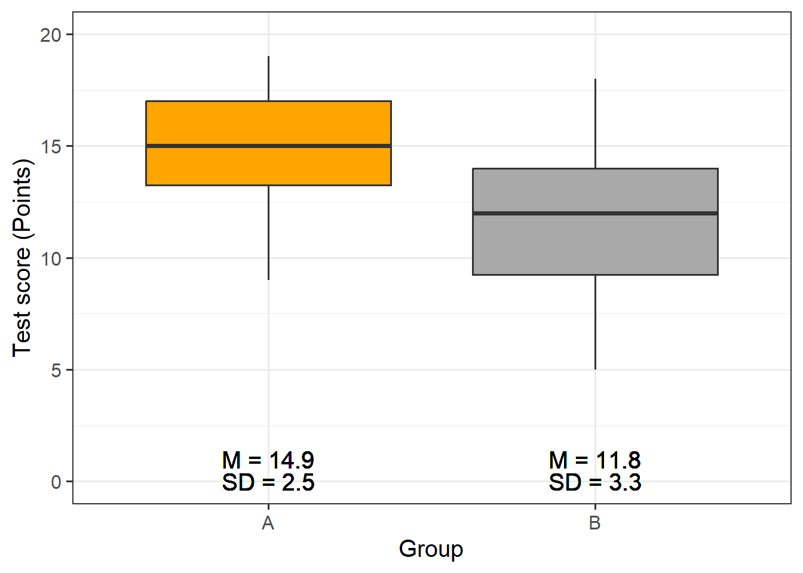
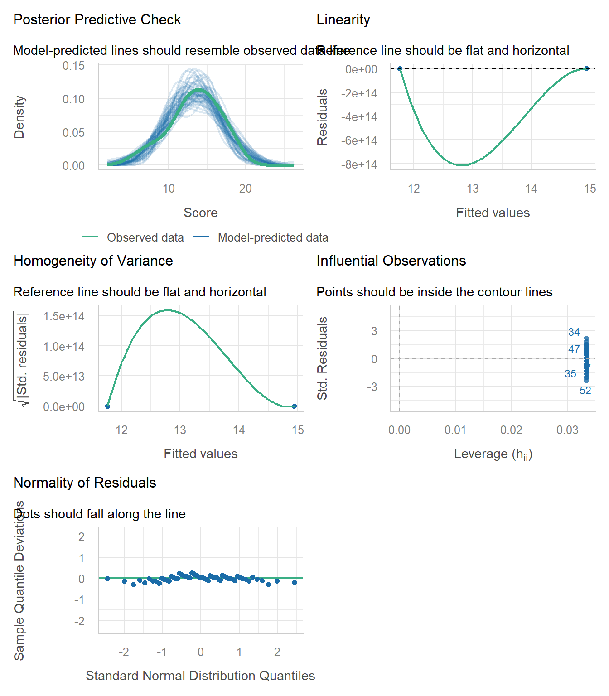
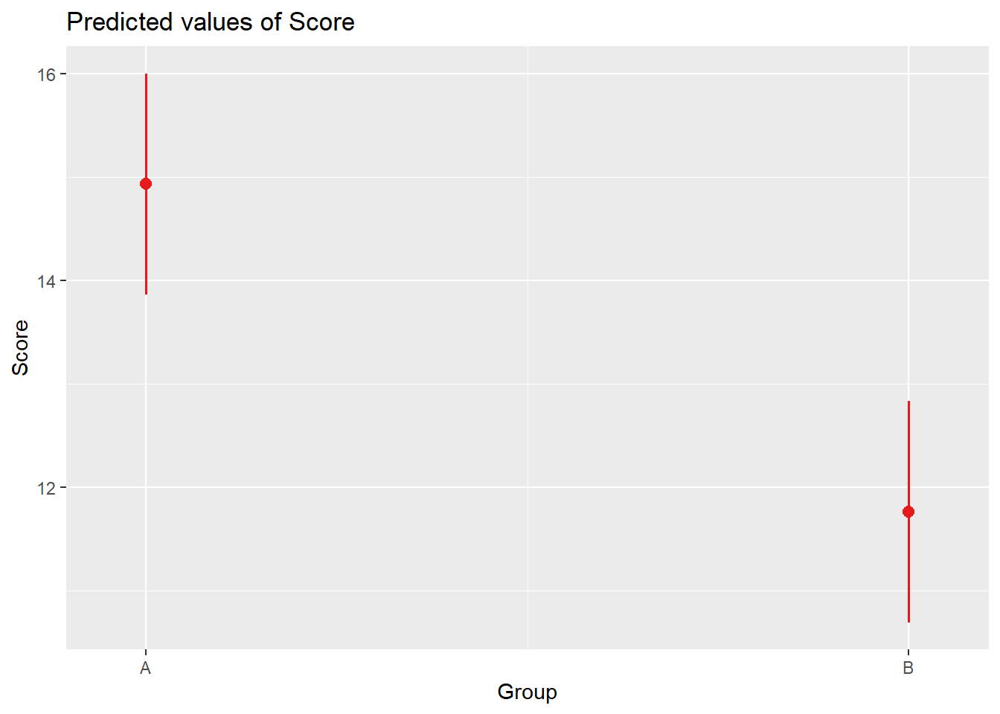

Height | Weight |
|---|---|
173 | 80 |
169 | 68 |
176 | 72 |
166 | 75 |
161 | 70 |
164 | 65 |
160 | 62 |
158 | 60 |
180 | 85 |
187 | 92 |
9 Simple Linear Regression
What This Session Covers
This session introduces the workhorse of statistical modeling: linear regression with a single predictor.
- The basic principle - fitting a line that minimizes squared residuals
- Assumptions - linearity, normality of residuals, homoscedasticity, independence
- Example 1 - preposition use across real time (numeric predictor)
- Model diagnostics -
performance::check_model()and formal checks - Example 2 - teaching styles (categorical predictor)
- Interpreting and reporting - coefficients, R², model comparison, and summary tables
This tutorial introduces regression analysis (also called regression modeling). Regression models are among the most widely used quantitative methods in the language sciences to assess if and how predictors (variables or interactions between variables) correlate with a certain response.
Regression models are so popular because they can
incorporate many predictors in a single model (multivariate: allows to test the impact of one predictor while the impact of (all) other predictors is controlled for)
extremely flexible and and can be fitted to different types of predictors and dependent variables
provide output that can be easily interpreted
conceptually relative simple and not overly complex from a mathematical perspective
The major difference between these types of models is that they take different types of dependent variables: linear regressions take numeric, logistic regressions take nominal variables, ordinal regressions take ordinal variables, and Poisson regressions take dependent variables that reflect counts of (rare) events.
9.1 The Basic Principle
Key concept: Residuals
A residual is the difference between an observed value and the value the model predicts for that observation - the vertical distance between a data point and the regression line. Residuals are the raw material of regression: the line is chosen to minimize the sum of squared residuals, the model assumptions are checked on the residuals (normality, constant variance), and the size of the residuals determines how well the model fits (R² measures the proportion of variance that is not left in the residuals).
The idea behind regression analysis is expressed formally in the equation below where \(f_{(x)}\) is the \(y\)-value we want to predict, \(\alpha\) is the intercept (the point where the regression line crosses the \(y\)-axis), \(\beta\) is the coefficient (the slope of the regression line).
\[\begin{equation} f_{(x)} = \alpha + \beta_{i}x + \epsilon \end{equation}\]
To understand what this means, let us imagine that we have collected information about the how tall people are and what they weigh. Now we want to predict the weight of people of a certain height - let’s say 180cm.
We can run a simple linear regression on the data and we get the following output:
# model for upper panels
m <- lm(Weight ~ Height, data = df)
summary(m)
Call:
lm(formula = Weight ~ Height, data = df)
Residuals:
Min 1Q Median 3Q Max
-7.3939 -2.3610 0.0096 3.1142 5.4453
Coefficients:
Estimate Std. Error t value Pr(>|t|)
(Intercept) -93.7759 27.0379 -3.468 0.008464 **
Height 0.9839 0.1594 6.173 0.000267 ***
---
Signif. codes: 0 '***' 0.001 '**' 0.01 '*' 0.05 '.' 0.1 ' ' 1
Residual standard error: 4.532 on 8 degrees of freedom
Multiple R-squared: 0.8265, Adjusted R-squared: 0.8048
F-statistic: 38.11 on 1 and 8 DF, p-value: 0.0002671To estimate how much some weights who is 180cm tall, we would multiply the coefficient (slope of the line) with 180 (\(x\)) and add the value of the intercept (point where line crosses the \(y\)-axis). If we plug in the numbers from the regression model below, we get
\[\begin{equation} -93.77 + 0.98 ∗ 180 = 83.33 (kg) \end{equation}\]
A person who is 180cm tall is predicted to weigh 83.33kg. Thus, the predictions of the weights are visualized as the red line in the figure below. Such lines are called regression lines. Regression lines are those lines where the sum of the red lines should be minimal. The slope of the regression line is called coefficient and the point where the regression line crosses the y-axis at x = 0 is called the intercept. Other important concepts in regression analysis are variance and residuals. Residuals are the distance between the line and the points (the red lines) and it is also called variance.

Some words about the plots in the figure above: the upper left panel shows the raw observed data (black dots). The upper right panel shows the mean weight (blue line) and the residuals (in red). residuals are the distances from the expected or predicted values to the observed values (in this case the mean is the most most basic model which we use to predict values while the observed values simply represent the actual data points). The lower left panel shows observed values and the regression line, i.e, that line which, when drawn through the data points, will have the lowest sum of residuals. The lower right panel shows the regression line and the residuals, i.e. the distances between the expected or predicted values to the actual observed values (in red). Note that the sum of residuals in the lower right panel is much smaller than the sum of residuals in the upper right panel. This suggest that considering Height is a good idea as it explains a substantive amount of residual error and reduces the sum of residuals (or variance).
9.2 Assumptions
Key concept: R² (R-squared)
R² is the proportion of the variance in the outcome that the model accounts for, ranging from 0 (the model explains nothing beyond the mean) to 1 (perfect fit). An R² of .30 means the predictor accounts for 30% of the variability in the outcome. In multiple regression, report the adjusted R², which corrects for the number of predictors - plain R² can only ever increase when predictors are added, even useless ones.
Linear regression makes several assumptions about the data. If these assumptions are not met, then this can mean that results of the model can be misleading, inaccurate, or plainly wrong. All these assumptions and potential problems can be checked by producing some diagnostic plots visualizing the residual errors (we will do this below). The assumptions of regression models are:
- Linearity: The relationship between the predictor (x) and the outcome (y) is assumed to be linear.
- Normality of residuals: The residual errors are assumed to be normally distributed.
- Homogeneity: The residuals are assumed to have a constant variance (homoscedasticity)
- Independence of residuals: The residuals are assumed not to be correlated.
You should check whether or not these assumptions hold true. Potential problems include:
- Non-linearity: The predictor affects the dependent variable differently for different values.
- Heteroscedasticity: Non-constant variance of error terms (this means that at least one other important predictor is not included in the model).
- Presence of influential observations:
- Outliers: extreme values in the dependent variable
- High-leverage points: extreme values in the predictors
- Outliers: extreme values in the dependent variable
Now that we are familiar with the basic principle of regression modeling - i.e. finding the line through data that has the smallest sum of residuals, we will apply this to a linguistic example.
9.3 Example 1: Preposition Use across Real-Time
We will now turn to our first example. In this example, we will investigate whether the frequency of prepositions has changed from Middle English to Late Modern English. The reasoning behind this example is that Old English was highly synthetic compared with Present-Day English which comparatively analytic. In other words, while Old English speakers used case to indicate syntactic relations, speakers of Present-Day English use word order and prepositions to indicate syntactic relationships. This means that the loss of case had to be compensated by different strategies and maybe these strategies continued to develop and increase in frequency even after the change from synthetic to analytic had been mostly accomplished. And this prolonged change in compensatory strategies is what this example will focus on.
The analysis is based on data extracted from the Penn Corpora of Historical English (see http://www.ling.upenn.edu/hist-corpora/), that consists of 603 texts written between 1125 and 1900. In preparation of this example, all elements that were part-of-speech tagged as prepositions were extracted from the PennCorpora.
Then, the relative frequencies (per 1,000 words) of prepositions per text were calculated. This frequency of prepositions per 1,000 words represents our dependent variable. In a next step, the date when each letter had been written was extracted. The resulting two vectors were combined into a table which thus contained for each text, when it was written (independent variable) and its relative frequency of prepositions (dependent or outcome variable).
A regression analysis will follow the steps described below:
Extraction and processing of the data
Data visualization
Applying the regression analysis to the data
Diagnosing the regression model and checking whether or not basic model assumptions have been violated.
In a first step, we load and inspect the data to get a first impression of its properties.
# load data
slrdata <- base::readRDS(url("https://slcladal.github.io/data/sld.rda", "rb"))Date | Genre | Text | Prepositions | Region |
|---|---|---|---|---|
1,736 | Science | albin | 166.01 | North |
1,711 | Education | anon | 139.86 | North |
1,808 | PrivateLetter | austen | 130.78 | North |
1,878 | Education | bain | 151.29 | North |
1,743 | Education | barclay | 145.72 | North |
1,908 | Education | benson | 120.77 | North |
1,906 | Diary | benson | 119.17 | North |
1,897 | Philosophy | boethja | 132.96 | North |
1,785 | Philosophy | boethri | 130.49 | North |
1,776 | Diary | boswell | 135.94 | North |
1,905 | Travel | bradley | 154.20 | North |
1,711 | Education | brightland | 149.14 | North |
1,762 | Sermon | burton | 159.71 | North |
1,726 | Sermon | butler | 157.49 | North |
1,835 | PrivateLetter | carlyle | 124.16 | North |
Inspecting the data is very important because it can happen that a data set may not load completely or that variables which should be numeric have been converted to character variables. If unchecked, then such issues could go unnoticed and cause trouble.
We will now plot the data to get a better understanding of what the data looks like.
ggplot(slrdata, aes(Date, Prepositions)) +
geom_point() +
theme_bw() +
labs(x = "Year", y = "Prepositions per 1,000 words") +
geom_smooth(method = "lm")
Before beginning with the regression analysis, we will center the year. We center the values of year by subtracting each value from the mean of year. This can be useful when dealing with numeric variables because if we did not center year, we would get estimated values for year 0 (a year when English did not even exist yet). If a variable is centered, the regression provides estimates of the model refer to the mean of that numeric variable. In other words, centering can be very helpful, especially with respect to the interpretation of the results that regression models report.
# center date
slrdata$Date <- slrdata$Date - mean(slrdata$Date) We will now begin the regression analysis by generating a first regression model and inspect its results.
# create initial model
m1.lm <- lm(Prepositions ~ Date, data = slrdata)
# inspect results
summary(m1.lm)
Call:
lm(formula = Prepositions ~ Date, data = slrdata)
Residuals:
Min 1Q Median 3Q Max
-69.101 -13.855 0.578 13.321 62.858
Coefficients:
Estimate Std. Error t value Pr(>|t|)
(Intercept) 1.322e+02 8.386e-01 157.625 <2e-16 ***
Date 1.732e-02 7.267e-03 2.383 0.0175 *
---
Signif. codes: 0 '***' 0.001 '**' 0.01 '*' 0.05 '.' 0.1 ' ' 1
Residual standard error: 19.43 on 535 degrees of freedom
Multiple R-squared: 0.01051, Adjusted R-squared: 0.008657
F-statistic: 5.681 on 1 and 535 DF, p-value: 0.0175The summary output starts by repeating the regression equation. Then, the model provides the distribution of the residuals. The residuals should be distributed normally with the absolute values of the Min and Max as well as the 1Q (first quartile) and 3Q (third quartile) being similar or ideally identical. In our case, the values are very similar which suggests that the residuals are distributed evenly and follow a normal distribution. The next part of the report is the coefficients table. The estimate for the intercept is the value of y at x = 0. The estimate for Date represents the slope of the regression line and tells us that with each year, the predicted frequency of prepositions increase by .01732 prepositions. The t-value is the Estimate divided by the standard error (Std. Error). Based on the t-value, the p-value can be calculated manually as shown below.
# use pt function (which uses t-values and the degrees of freedom)
2*pt(-2.383, nrow(slrdata)-1)[1] 0.01751964The R2-values tell us how much variance is explained by our model. The baseline value represents a model that uses merely the mean. 0.0105 means that our model explains only 1.05 percent of the variance (0.010 x 100) - which is a tiny amount. The problem of the multiple R2 is that it will increase even if we add variables that explain almost no variance. Hence, multiple R2 encourages the inclusion of junk variables.
\[\begin{equation} R^2 = R^2_{multiple} = 1 - \frac{\sum (y_i - \hat{y_i})^2}{\sum (y_i - \bar y)^2} \end{equation}\]
The adjusted R2-value takes the number of predictors into account and, thus, the adjusted R2 will always be lower than the multiple R2. This is so because the adjusted R2 penalizes models for having predictors. The equation for the adjusted R2 below shows that the amount of variance that is explained by all the variables in the model (the top part of the fraction) must outweigh the inclusion of the number of variables (k) (lower part of the fraction). Thus, the adjusted R2 will decrease when variables are added that explain little or even no variance while it will increase if variables are added that explain a lot of variance.
\[\begin{equation} R^2_{adjusted} = 1 - (\frac{(1 - R^2)(n - 1)}{n - k - 1}) \end{equation}\]
If there is a big difference between the two R2-values, then the model contains (many) predictors that do not explain much variance which is not good. The F-statistic and the associated p-value tell us that the model, despite explaining almost no variance, is still significantly better than an intercept-only base-line model (or using the overall mean to predict the frequency of prepositions per text).
We can test this and also see where the F-values comes from by comparing the
# create intercept-only base-line model
m0.lm <- lm(Prepositions ~ 1, data = slrdata)
# compare the base-line and the more saturated model
anova(m1.lm, m0.lm, test = "F")Analysis of Variance Table
Model 1: Prepositions ~ Date
Model 2: Prepositions ~ 1
Res.Df RSS Df Sum of Sq F Pr(>F)
1 535 202058
2 536 204204 -1 -2145.6 5.6809 0.0175 *
---
Signif. codes: 0 '***' 0.001 '**' 0.01 '*' 0.05 '.' 0.1 ' ' 1The F- and p-values are exactly those reported by the summary which shows where the F-values comes from and what it means; namely it denote the difference between the base-line and the more saturated model.
The degrees of freedom associated with the residual standard error are the number of cases in the model minus the number of predictors (including the intercept). The residual standard error is square root of the sum of the squared residuals of the model divided by the degrees of freedom. Have a look at he following to clear this up:
# DF = N - number of predictors (including intercept)
DegreesOfFreedom <- nrow(slrdata)-length(coef(m1.lm))
# sum of the squared residuals
SumSquaredResiduals <- sum(resid(m1.lm)^2)
# Residual Standard Error
sqrt(SumSquaredResiduals/DegreesOfFreedom); DegreesOfFreedom[1] 19.43396[1] 535We will now check the model assumptions using diagnostic plots. To do this, we use the check_model function from the performance package (Lüdecke et al. 2021) which generates a panel of diagnostic plots and - very conveniently - tells us in the subtitle of each panel what we should be looking for.
# generate diagnostic plots
performance::check_model(m1.lm)
We will go through the panels one by one:
Posterior Predictive Check
This plot compares the distribution of the observed data (green line) with distributions of data simulated from the fitted model (blue lines). If the model captures the data well, the simulated distributions should closely resemble the observed distribution. Strong discrepancies indicate that the model fails to reproduce important characteristics of the data (e.g., skewness or multimodality).
Linearity
This plot is used to check the linearity assumption: the reference line should be flat and horizontal. If a trend becomes visible in the line (e.g., a curve or a zigzag pattern), the relationship between predictor(s) and outcome is not adequately captured by a straight line and the model is problematic (in such cases, transforming variables or adding non-linear terms can help).
Homogeneity of Variance
This plot is used to check the homogeneity of variance of the residuals (homoscedasticity): a flat, horizontal reference line with equally spread points indicates homoscedasticity. Homoscedasticity means that the variance of the residuals remains constant and does not correlate with any independent variable. If there is a trend in the line, we are dealing with heteroscedasticity, that is, a correlation between the fitted values and the spread of the residuals, which is very problematic for regressions.
Influential Observations
This plot is used to identify influential cases that disproportionately affect the regression (this would be problematic): points should lie within the dashed contour lines. The contours are based on Cook’s distance, which shows how much the regression changes when the model is re-fitted without that data point. If influential data points are present, they should be inspected and either down-weighted (e.g., by fitting a robust regression) or, if they represent errors, removed. In addition to the visual check, we can formally test for influential observations using the check_outliers function.
# check for influential observations
performance::check_outliers(m1.lm)OK: No outliers detected.
- Based on the following method and threshold: cook (0.7).
- For variable: (Whole model)Normality of Residuals
This plot is used to examine whether the residuals are normally distributed: it is good if the points follow the straight reference line. If the points fall on the line, the residuals follow a normal distribution. If the points deviate from the line at the top and bottom, this shows that the model does not predict small and large values well and that it therefore does not have a good fit. We can complement the visual checks with formal tests of normality and heteroscedasticity as shown below.
# formal test of normality of residuals
performance::check_normality(m1.lm)OK: residuals appear as normally distributed (p = 0.873).# formal test of heteroscedasticity
performance::check_heteroscedasticity(m1.lm)OK: Error variance appears to be homoscedastic (p = 0.272).In our case, the diagnostics do not indicate any severe violations of the model assumptions and we can proceed with the interpretation of the model.
Now, we plot the effect reported by the model.
# generate summary table
sjPlot::plot_model(m1.lm, type = "pred", terms = c("Date"))
We end the current analysis by summarizing the results of the regression analysis using the tab_model function from the sjPlot package (Lüdecke 2021) (as is shown below).
# generate summary table
sjPlot::tab_model(m1.lm) | Prepositions | |||
| Predictors | Estimates | CI | p |
| (Intercept) | 132.19 | 130.54 – 133.84 | <0.001 |
| Date | 0.02 | 0.00 – 0.03 | 0.017 |
| Observations | 537 | ||
| R2 / R2 adjusted | 0.011 / 0.009 | ||
Typically, the results of regression analyses are presented in such tables as they include all important measures of model quality and significance, as well as the magnitude of the effects.
In addition, the results of simple linear regressions should be summarized in writing. We can use the reports package (Makowski et al. 2021) to summarize the analysis.
report::report(m1.lm)We fitted a linear model (estimated using OLS) to predict Prepositions with
Date (formula: Prepositions ~ Date). The model explains a statistically
significant and very weak proportion of variance (R2 = 0.01, F(1, 535) = 5.68,
p = 0.017, adj. R2 = 8.66e-03). The model's intercept, corresponding to Date =
0, is at 132.19 (95% CI [130.54, 133.84], t(535) = 157.62, p < .001). Within
this model:
- The effect of Date is statistically significant and positive (beta = 0.02,
95% CI [3.05e-03, 0.03], t(535) = 2.38, p = 0.017; Std. beta = 0.10, 95% CI
[0.02, 0.19])
Standardized parameters were obtained by fitting the model on a standardized
version of the dataset. 95% Confidence Intervals (CIs) and p-values were
computed using a Wald t-distribution approximation.We can use this output to write up a final report:
A simple linear regression has been fitted to the data. A visual assessment of the model diagnostic graphics did not indicate any problematic or disproportionately influential data points (outliers) and performed significantly better compared to an intercept-only base line model but only explained .87 percent of the variance (adjusted R2: .0087, F-statistic (1, 535): 5,68, p-value: 0.0175*). The final minimal adequate linear regression model is based on 537 data points and confirms a significant and positive correlation between the year in which the text was written and the relative frequency of prepositions (coefficient estimate: .02 (standardized : 0.10, 95% CI [0.02, 0.19]), SE: 0.01, t-value535: 2.38, p-value: .0175*). Standardized parameters were obtained by fitting the model on a standardized version of the dataset. 95% Confidence Intervals (CIs) and p-values were computed using the Wald approximation.
9.4 Example 2: Teaching Styles
In the previous example, we dealt with two numeric variables, while the following example deals with a categorical independent variable and a numeric dependent variable. The ability for regressions to handle very different types of variables makes regressions a widely used and robust method of analysis.
In this example, we are dealing with two groups of students that have been randomly assigned to be exposed to different teaching methods. Both groups undergo a language learning test after the lesson with a maximum score of 20 points.
The question that we will try to answer is whether the students in group A have performed significantly better than those in group B which would indicate that the teaching method to which group A was exposed works better than the teaching method to which group B was exposed.
Let’s move on to implementing the regression in R. In a first step, we load the data set and inspect its structure.
# load data
slrdata2 <- base::readRDS(url("https://slcladal.github.io/data/sgd.rda", "rb")) |>
dplyr::mutate(Group = factor(Group))Group | Score |
|---|---|
A | 15 |
A | 12 |
A | 11 |
A | 18 |
A | 15 |
A | 15 |
We also inspect the structure of the data.
'data.frame': 60 obs. of 2 variables:
$ Group: Factor w/ 2 levels "A","B": 1 1 1 1 1 1 1 1 1 1 ...
$ Score: int 15 12 11 18 15 15 9 19 14 13 ...Now, we graphically display the data. In this case, a boxplot represents a good way to visualize the data.
# extract means
slrdata2 |>
dplyr::group_by(Group) |>
dplyr::mutate(Mean = round(mean(Score), 1), SD = round(sd(Score), 1)) |>
ggplot(aes(Group, Score)) +
geom_boxplot(fill=c("orange", "darkgray")) +
geom_text(aes(label = paste("M = ", Mean, sep = ""), y = 1)) +
geom_text(aes(label = paste("SD = ", SD, sep = ""), y = 0)) +
theme_bw(base_size = 15) +
labs(x = "Group", y = "Test score (Points)") +
coord_cartesian(ylim = c(0, 20)) +
guides(fill = FALSE) 
The data indicate that group A did significantly better than group B. We will test this impression by generating the regression model and creating the model and extracting the model summary.
# generate regression model
m2.lm <- lm(Score ~ Group, data = slrdata2)
# inspect results
summary(m2.lm)
Call:
lm(formula = Score ~ Group, data = slrdata2)
Residuals:
Min 1Q Median 3Q Max
-6.767 -1.933 0.150 2.067 6.233
Coefficients:
Estimate Std. Error t value Pr(>|t|)
(Intercept) 14.9333 0.5346 27.935 < 2e-16 ***
GroupB -3.1667 0.7560 -4.189 9.67e-05 ***
---
Signif. codes: 0 '***' 0.001 '**' 0.01 '*' 0.05 '.' 0.1 ' ' 1
Residual standard error: 2.928 on 58 degrees of freedom
Multiple R-squared: 0.2322, Adjusted R-squared: 0.219
F-statistic: 17.55 on 1 and 58 DF, p-value: 9.669e-05The model summary reports that Group A performed significantly better compared with Group B. This is shown by the fact that the p-value (the value in the column with the header (Pr(>|t|)) is smaller than .001 as indicated by the three * after the p-values). Also, the negative Estimate for Group B indicates that Group B has lower scores than Group A. We will now generate the diagnostic graphics.
# generate diagnostic plots
performance::check_model(m2.lm)
These diagnostics also show no problems (note that with a categorical predictor, the fitted values fall into just two groups, which is why the points line up in two vertical bands). We continue by visualizing the results of the model.
# generate summary table
sjPlot::plot_model(m2.lm, type = "pred", terms = c("Group"))
Now, we summarize the results of the model.
# generate summary table
sjPlot::tab_model(m2.lm) | Score | |||
| Predictors | Estimates | CI | p |
| (Intercept) | 14.93 | 13.86 – 16.00 | <0.001 |
| Group [B] | -3.17 | -4.68 – -1.65 | <0.001 |
| Observations | 60 | ||
| R2 / R2 adjusted | 0.232 / 0.219 | ||
We can use the reports package (Makowski et al. 2021) to prepare the write-up of the analysis.
report::report(m2.lm)We fitted a linear model (estimated using OLS) to predict Score with Group
(formula: Score ~ Group). The model explains a statistically significant and
moderate proportion of variance (R2 = 0.23, F(1, 58) = 17.55, p < .001, adj. R2
= 0.22). The model's intercept, corresponding to Group = A, is at 14.93 (95% CI
[13.86, 16.00], t(58) = 27.94, p < .001). Within this model:
- The effect of Group [B] is statistically significant and negative (beta =
-3.17, 95% CI [-4.68, -1.65], t(58) = -4.19, p < .001; Std. beta = -0.96, 95%
CI [-1.41, -0.50])
Standardized parameters were obtained by fitting the model on a standardized
version of the dataset. 95% Confidence Intervals (CIs) and p-values were
computed using a Wald t-distribution approximation.We can use this output to write up a final report:
A simple linear regression was fitted to the data. A visual assessment of the model diagnostics did not indicate any problematic or disproportionately influential data points (outliers). The final linear regression model is based on 60 data points, performed significantly better than an intercept-only base line model (F (1, 58): 17.55, p-value <. 001\(***\)), and reported that the model explained 21.9 percent of variance which confirmed a good model fit. According to this final model, group A scored significantly better on the language learning test than group B (coefficient: -3.17, 95% CI [-4.68, -1.65], Std. : -0.96, 95% CI [-1.41, -0.50], SE: 0.48, t-value58: -4.19, p-value <. 001\(***\)). Standardized parameters were obtained by fitting the model on a standardized version of the dataset. 95% Confidence Intervals (CIs) and p-values were computed using the Wald approximation.
Exercises: Simple Linear Regression
Q1. In a regression predicting reaction time (in ms) from word frequency, the slope coefficient is -25. What does this mean?
Q2. What is a residual?
Q3. The diagnostic plots show residuals that fan out - small for low fitted values and increasingly spread out for high fitted values. Which assumption is violated?
Lüdecke, Daniel. 2021. sjPlot: Data Visualization for Statistics in Social Science. https://CRAN.R-project.org/package=sjPlot.
Lüdecke, Daniel, Mattan S. Ben-Shachar, Indrajeet Patil, Philip Waggoner, and Dominique Makowski. 2021. “Performance: An R Package for Assessment, Comparison and Testing of Statistical Models.” Journal of Open Source Software 6 (60): 3139. https://doi.org/10.21105/joss.03139.
Makowski, Dominique, Mattan S. Ben-Shachar, Indrajeet Patil, and Daniel Lüdecke. 2021. “Automated Results Reporting as a Practical Tool to Improve Reproducibility and Methodological Best Practices Adoption.” CRAN. https://github.com/easystats/report.